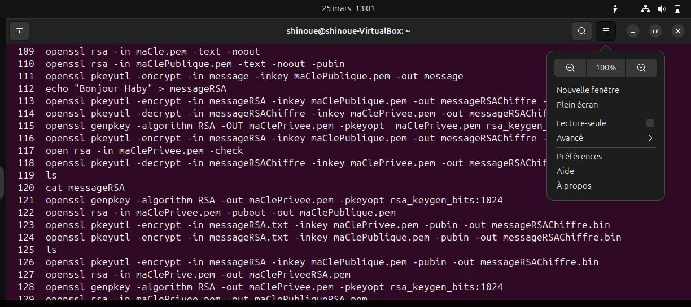

Projets récents
« Quand on n’a rien à perdre, on peut tout accomplir. » – Naruto Uzumaki.
Poubelle Intelligente
Ce projet IoT utilise des capteurs pour ouvrir automatiquement la poubelle. J'ai appris à connecter des composants électroniques et à programmer les capteurs pour détecter la présence. La vidéo montre le fonctionnement en direct du projet et peut être utilisé à distance via une interface web.
Surveillance Maritime
Ce projet de surveillance maritime utilise des capteurs pour détecter les mouvements et les conditions météorologiques en mer. J'ai appris à intégrer des capteurs de mouvement et de météo, et à afficher les données en temps réel sur une interface web. L'image ci-dessus montre l'interface de surveillance avec les données collectées.

Projet OpenSSL
Ce projet m'a permis de comprendre les fondements de la cryptographie. J'ai appris à générer des clés RSA et AES, à chiffrer et déchiffrer des messages, et à sécuriser des informations sensibles. L'image ci-dessus montre l'interface de test du chiffrement.

Algorithme de repertoire
J'ai créé un programme capable de remplir un répertoire tout en pouvant parcourir un contact ,le modifier, l'ajouter, et le supprimer. Ce projet m'a permis de renforcer mes compétences en programmation et en gestion de données.

Projet Sen StarNet
SenStarNet est un projet de réseau intelligent au Sénégal, conçu pour optimiser la connectivité, sécuriser les communications et analyser les flux de données en temps réel.
Creation de Teranga Delices
Teranga Délices est un projet de restaurant visant à offrir une expérience culinaire authentique, combinant saveurs locales et service convivial pour ravir tous les clients.
Creation d'un site vitrine pour une entreprise
Conception et développement d'un site web vitrine pour une entreprise technologique, mettant en avant ses produits et services. J'ai utilisé HTML, CSS et JavaScript pour créer une interface utilisateur moderne et responsive. La video montre le design final du site.
Robot Gaz
Conception et programmation d’un robot capable de détecter et réguler le gaz. J'ai intégré des capteurs pour mesurer le gaz et déclencher des alertes. La vidéo montre le robot en action avec l'affichage des capteurs.